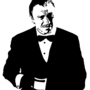

Ciao! Sono Davide, e mi piacciono le cose che funzionano.
Sono appassionato di progettazione e ho un culto per l'efficienza, ma per predisposizione naturale e forse un po' perché sono ingegnere, adoro risolvere problemi.
Mettendo a sistema le mie passioni progetto soluzioni cercando efficacia ed efficienza, e se poi ne trovo una migliore o semplicemente più elegante, non ho pace fino a che non riesco ad implementarla.
Cerco sempre sistemi definitivi: non perché sia possibile trovarli, ma perché, lavorando come se lo fosse, di solito il risultato è di migliore qualità.
Programmazione e sviluppo software non sono il mio mestiere, ma mi piace l'idea che le macchine sostituiscano l'uomo nelle cose in cui sono molto più in gamba di noi.
Utilizzando linguaggi di programmazione a cui con curiosità mi sono avvicinato, scrivo codice per risolvere problemi nel modo più pratico possibile, ovvero facendo fare al PC quello che sa fare più velocemente di me.
Credo nella crescita umana derivante dallo scambio delle idee, quindi condivido le soluzioni che penso possano in qualche modo essere utili anche ad altri, immaginando che chi cerca una ruota vi possa trovare se non la ruota che gli serve, almeno un'ispirazione o qualcosa che le somigli.
 "Sono il Sig. Wolf, risolvo problemi" (Il celebre Mr.Wolf)